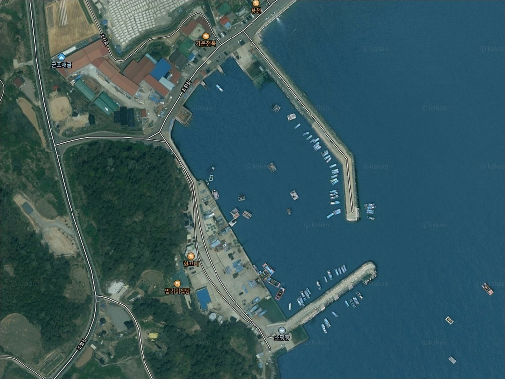
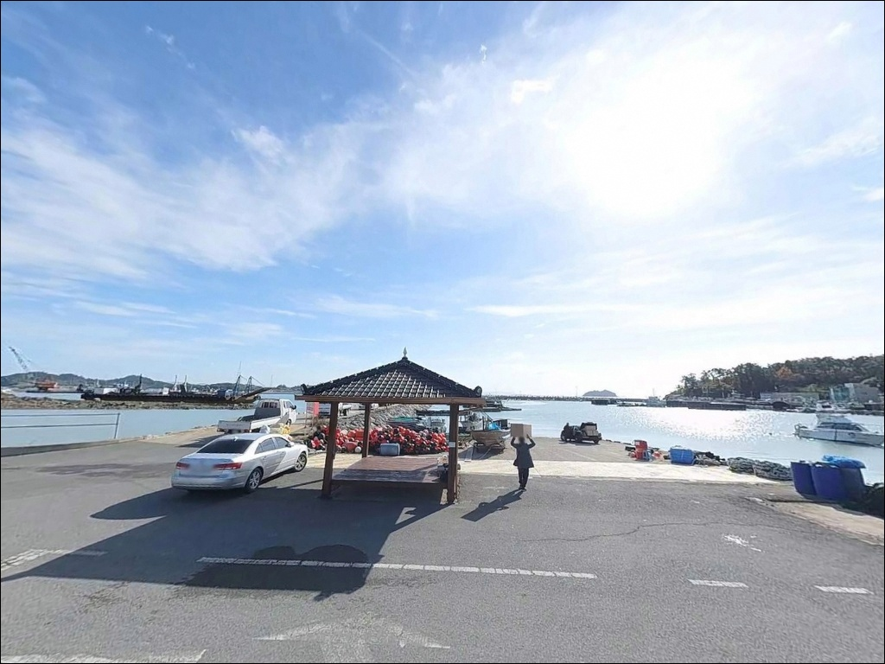
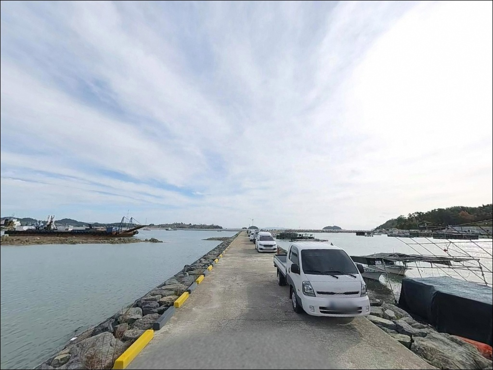
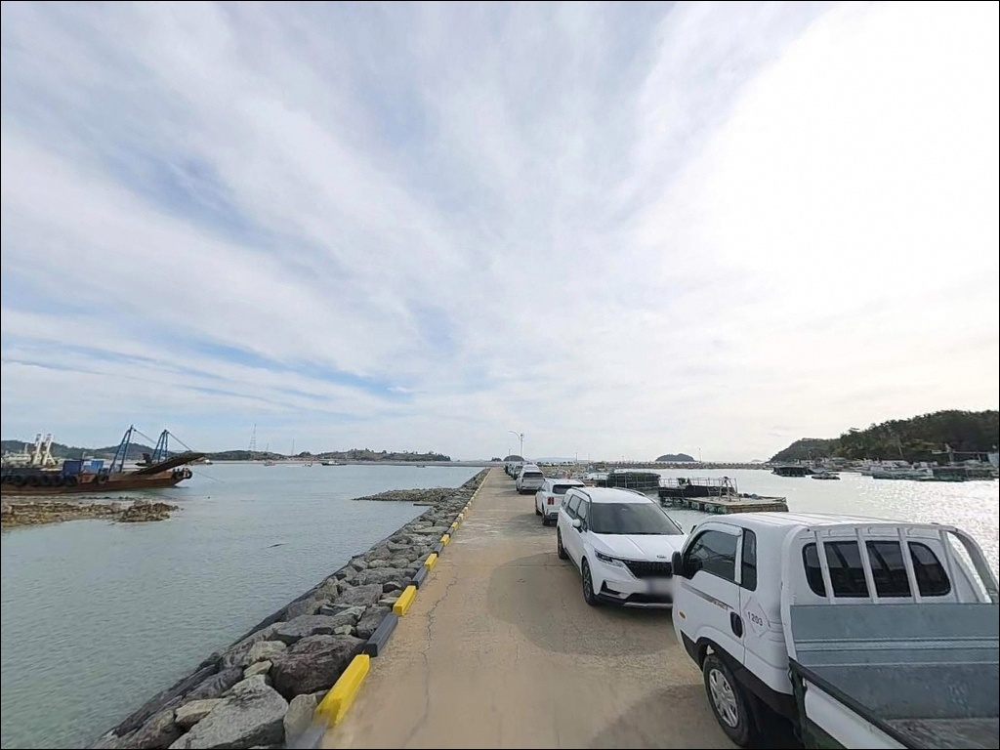
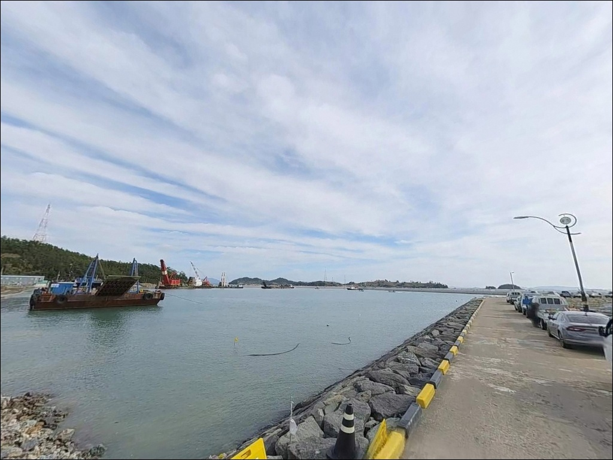
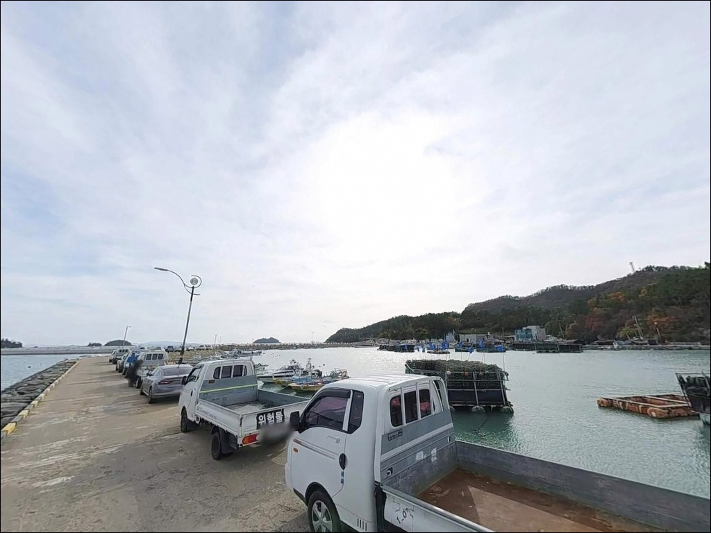
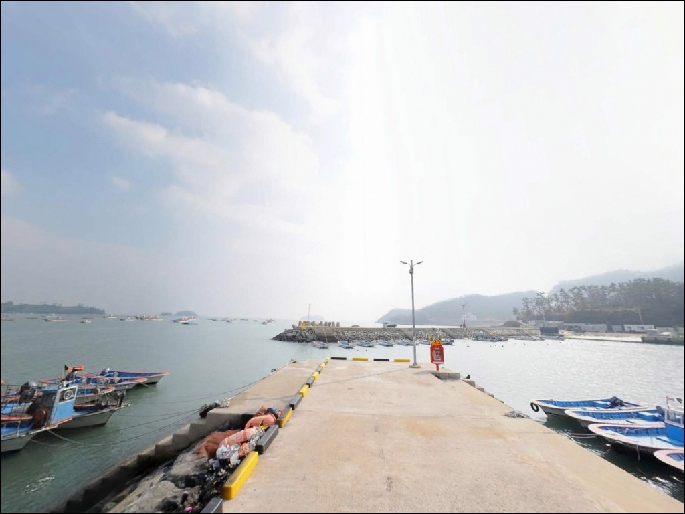
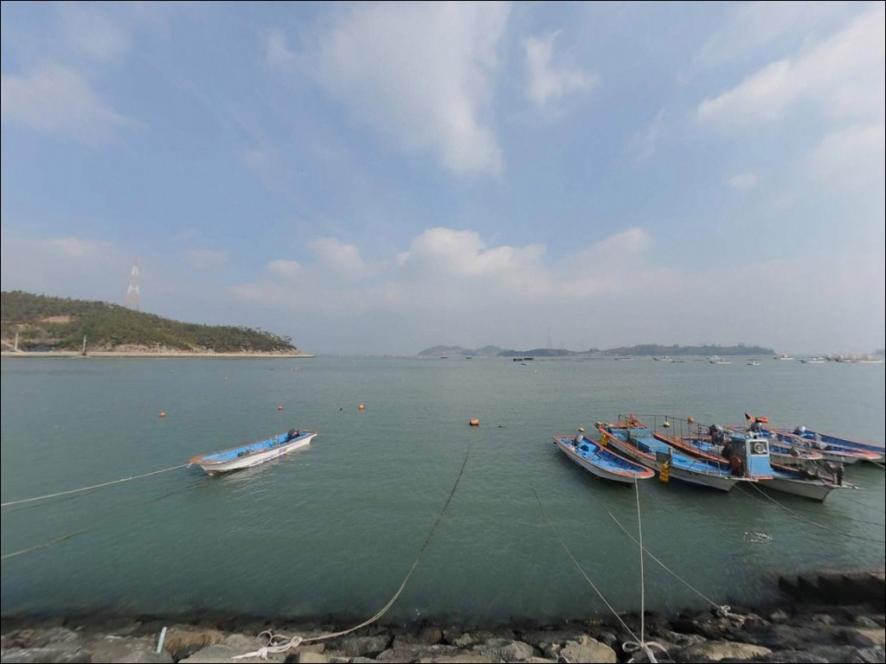
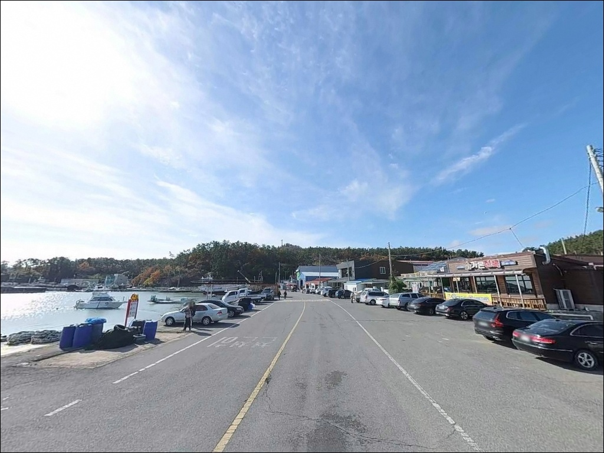

초평항(초평방파제), 진도 전남 진도군 바다와 가장 가까이 머무는 차박, 낚시 해안 명소
이 페이지에는 광고(제휴 링크 포함)가 있으며, 광고 링크를 통해 구매하면 운영자가 판매 수익 또는 수수료를 받을 수 있습니다. 포인트 사진: 카카오맵 스카이뷰·로드뷰. 이 페이지의 지도·사진 이미지는 카카오맵의 실제 서비스 이미지와 다를 수 있습니다.


포인트 안내
초평항(초평방파제)
전남 진도군 의신면 초사리 509-7
조차가 대조 기준 3.6m에 달하는 진도 남동 해역에서
간조 전후에 방파제에 들어서면
내항 쪽 수위가 크게 낮아져
채비를 넣을 수 있는 구간 자체가 줄어듭니다.
원하는 자리에서 원하는 방식으로 낚시하려면
물때 확인이 출발 전 첫 번째 할 일입니다.
초평항은 1983년 지방어항으로 시작해
2017년 국가어항으로 승격된 어항입니다.
방파제 357m와 내항 선착장이 갖춰진 구조로,
진도 모도(신비의 바닷길)로 향하는
도선이 출발하는 선착장이기도 합니다.
이 글은 초평항의 방파제 구조, 물때 기반 낚시 자리 판단,
진입과 차박 여건에 집중합니다.
조황 단정과 특정 어종 보장은
이 글의 범위에 포함되지 않습니다.

1. 진입 동선과 포인트 접근성
초평항까지 이어지는 도로는
왕복 2차선 수준으로 진입 자체는 어렵지 않습니다.
진도읍을 지난 뒤 의신면 방향으로 내려와
초사리까지 해안도로를 따라 진행하는 루트가 일반적입니다.
국가어항으로 지정된 어항인 만큼
방파제 입구까지 차량이 직접 진입 가능한 구조입니다.
항 내부는 포장된 주차 공간이 넓게 조성되어 있어
대형 SUV나 캠핑 장비를 실은 차량도
회차에 큰 어려움이 없는 편입니다.
다만 이른 아침에는 어선 출항과
수산물 상하차 작업이 이루어지는 공간이므로
어민 동선 바깥쪽으로 주차 자리를 잡는 것이 기본입니다.
방파제는 모도 방향으로 뻗은 형태로,
내항을 감싸는 두 방파제 사이에
선박 정박과 선착장 기능이 집중되어 있습니다.
낚시 입장 전 항 내 차량 통행과
계류선 위치를 먼저 파악하는 것이 좋습니다.

2. 차박 환경과 야간 체류 여건
초평항은 항 내 주차 공간이 넓고
배후 초사리 마을과 인접해 있어
완전히 외딴 포구와는 다른 분위기입니다.
야간에도 어선 작업등과 항구 주변 가로등으로
기본적인 조명은 들어오는 편이나,
방파제 끝단으로 갈수록
광원이 줄어드는 구간이 있어
개인 헤드랜턴은 필수입니다.
쏠비치 진도 리조트가 인접해 있고
모도 관광 동선의 출발지이기도 해
주말과 성수기에는 관광객 차량과 보행자 왕래가
있는 편입니다.
낚시 후 조용히 하룻밤 머무는 용도라면
주중 방문이 더 한산한 환경을 기대할 수 있습니다.
차박 전용 공간이 아닌 일반 어항이라는 점을
전제로 자리를 잡아야 합니다.
진도 남동 해역 특성상 기상 변화가 빠른 편입니다.
바람 방향과 세기는 야간 체류 시
체감 온도와 직결되므로
출발 전 기상청 해상예보를
반드시 확인하는 편이 좋습니다.


3. 주변 편의시설 및 인프라 현황
초평항 주변 초사리 일대에는
식당과 카페, 횟집 등이 있으며
화장실과 수도 시설도 항 구역 내에 갖춰져 있습니다.
세븐일레븐 편의점이 의신면 초사리에
등록되어 있어 기본 간식과 음료 조달이 가능합니다.
인접한 쏠비치 진도 리조트 단지 내에는
마트 수준의 매장과 식당·카페 등
부대시설이 운영되고 있어
낚시 소품이나 먹거리가 부족할 경우
이 동선을 활용하는 것이 현실적입니다.
응급 상황 발생 시 진도읍까지 거리가 있으므로
비상약품과 충분한 수분은
출발 전에 준비해 두는 것이 기본입니다.

4. 진입 전 반드시 챙겨야 할 준비사항
초평항 방문에서 가장 먼저 확인해야 할 것은
물때입니다.
진도권은 조차가 대조 기준 3.6m로
국내 해역 중 조차가 큰 축에 속하며,
간조 전후에 내항 쪽 수위가 크게 낮아지는 구조입니다.
바다타임에서 초평항 기준 물때를 확인하고
중들물 이후 만조 전후를 공략 타이밍으로
잡는 것이 이 포인트의 기본 접근법입니다.
방파제 외항 테트라 구간은
밑걸림이 생기기 쉬운 지형이므로
채비와 봉돌, 바늘 여유분을
넉넉하게 준비해 가는 편이 좋습니다.
초평항은 어촌신활력증진사업 공사가 예정된 어항이므로
방문 전 방파제 공사 구간과
진입 통제 여부를 현장에서 먼저 확인해야 합니다.
기상청 해상특보는 당일 아침 출발 전에
한 번 더 확인하는 것이 포인트 낭비를 막는 조건입니다.
야간 낚시를 계획한다면
헤드랜턴과 구명조끼는 필수이며,
테트라포드 위는 이끼와 조류로
미끄러운 면이 있어 갯바위화 신발도 권장됩니다.

5. 외항 테트라와 방파제 끝단으로 나뉘는 낚시 구조
초평항의 방파제는 두 기가 내항을 감싸는 구조로,
외항 쪽에는 테트라포드가 배치되어 있고
내항 쪽은 석축 또는 수직벽 형태입니다.
바다타임 기준 수심은 -0.5~2.0m 수준으로
전반적으로 얕은 편에 속하며,
간조 시에는 일부 구간이
바닥에 근접하거나 더 얕아지는 구조입니다.
저질은 모래와 펄이 혼합된 형태로,
방파제 입구에서 멀어질수록
수심이 한 단계 더 깊어지는 지형 패턴입니다.
원투낚시의 경우 가능한 한 멀리 던져
수심이 확보되는 지점을 노리는 방식이
이 포인트에 맞는 운영법입니다.
봉돌 15호 이상에 긴 캐스팅 위주 세팅이
얕은 저질 환경에 유리합니다.
방파제 꺾임 구간과 끝단 외항 쪽은
조류 변화가 더 활성화되는 구간으로,
루어와 찌낚시 모두 이 자리를 우선 탐색해 볼 만합니다.
항 입구 동쪽 약 200m 해상에 암초가 있다는
항해 정보가 있으므로,
보트나 카약 등 레저 활동 계획이 있다면
수심과 암초 위치를 사전에 확인하는 것이 먼저입니다.
출조 전 최신 조황은 반드시 검색해 보시기 바랍니다.


6. 초평항에 어울리는 낚시 스타일
원투낚시는 이 포인트의 기본 방식입니다.
모래·펄 혼합 저질 위를 바닥층으로 공략하는 채비 구조로,
방파제 외항 끝단에서 멀리 던져
수심이 확보되는 구간을 노리는 것이 기본 전략입니다.
붕장어나 감성돔 계열이
이런 구조의 바닥층 공략에 반응하는 편입니다.
찌낚시와 릴찌낚시는 외항 테트라포드 구간에서
유효한 방식입니다.
수직벽과 테트라 사이 어두운 구간은
어류 은신처 역할을 하며,
조류가 적당히 흐르는 타이밍에
유동찌를 활용한 수심 탐색이
이 지형에 잘 맞습니다.
야간 루어낚시도 노려볼 만한 방식입니다.
방파제 가로등과 코너 주변은
농어와 우럭이 먹이 활동을 하는 타이밍에
반응이 올라오는 구간입니다.
미노우나 메탈 지그, 러버지그를 활용한
워킹 루어 방식으로 방파제 코너를 천천히 탐색하는
접근이 어울립니다.
수온이 안정되는 여름~초가을 야간이
이 방식에 유리한 편입니다.
에깅은 테트라포드 주변에서 시즌성으로 가능한 방식입니다.
갑오징어와 주꾸미를 대상으로
에기를 바닥 가까이 탐색하는 방식이
이 포인트 수심 조건과 저질 구조에 맞습니다.
내항 쪽은 민장대 세팅으로
전갱이·전어 등 생활어종을 노리는 데
가벼운 채비가 어울립니다.

7. 대안 포인트와 플랜 B 동선
초평항 조황이 부진하거나
공사·행사 등으로 방파제 접근이 어려울 때는
같은 해안선을 공유하는
수품항(약 5km)이 첫 번째 대안입니다.
접도 섬에 위치한 국가어항으로
수심 0.6~2.0m, 펄 저질 구조에
낚시 관련 자료가 상대적으로 많은 편입니다.
회동마을·도목마을·금계마을 방파제는
초평항에서 0.5~4km 거리 내에
분포하는 소형 방파제들입니다.
같은 만 안쪽에 위치해
조류와 수온 조건이 비슷한 편이며,
짧은 이동으로 플랜 B를 구성하기 좋은
후보지입니다.
차박 여건이 초평항보다 한적한 환경을 원한다면
금계리 해안도로 일대를 먼저 탐색해 보는 편이
현실적입니다.
단, 현장 표지나 통제 여부는 수시로 바뀔 수 있으므로
도착 후 직접 확인하는 것이 전제입니다.

물때를 맞추면 초평항 방파제가
다르게 보입니다
원투낚시나 찌낚시를 즐기는 낚시인이라면
초평항의 방파제 구조는
복수의 방식을 동시에 운영할 수 있는 조건입니다.
진입이 편하고 주차 공간이 넓어
출조 준비 면에서 부담이 적으며,
주변 편의시설이 갖춰져 있어
첫 방문 포인트로도 접근하기 좋은 어항입니다.
다만 조차가 큰 해역 특성상
물때를 무시하고 간조 전후에 들어서면
가용 낚시 구간이 줄어드는 구조입니다.
바다타임 물때 확인, 채비 여유분 준비, 공사 구간 파악,
이 세 가지를 출발 전에 갖추고 가면
만족도가 달라지는 포인트입니다.
쏠비치 진도 리조트와 모도 신비의 바닷길이 가까운
관광 동선 위에 있어,
낚시와 차박을 하루에 엮고
다음 날 인근 명소를 돌아보는 일정에도
잘 맞는 출조지입니다.